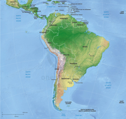

Image by
Image by !pip install -Uqq fastbook duckduckgo_searchLesson 1 of the Practical Deep Learning for Coders course offered by fast.ai gets hands-on on building an image classifier of your choice pretty quickly without any hastles from the get-go!
I tried to build an image classifier that could classify the 7 continents based on their map images. And boy let me tell you, I was unbelievably amazed by its results.
Let me show you how I did it! Feel free to try yourself on Colab or any platform of your choice!
Continents Classifier
Setting Up
Install Packages
We begin by installing fastbook and duckduckgo_search. The formers allows us to access the fast.ai library that will help us build our image classifier and the latter allows us to access DuckDuckGo search engine features to search, get, and download our images for training.
Import Relevant Libraries
We import the relevant libraries. More about them here.
from duckduckgo_search import ddg_images
from fastcore.all import *
from fastdownload import download_url
from fastai.vision.all import *Setup A System For Getting Images
Here, we create a handy little function that can search for a specific term on DuckDuckGo image searches and get its URLs
def search_images(term, max_images=30):
print(f"Searching for '{term}'")
return L(ddg_images(term, max_results=max_images)).itemgot('image')For example, if our term is africa continent map, the above function gets the first popped up URL of the image of africa continent map as shown below.
urls = search_images('africa continent map', max_images=1)
urls[0]Searching for 'africa continent map''https://cdn.onestopmap.com/wp-content/uploads/2015/05/464-map-africa-continent-political-shaded-relief.jpg'Once, we get the URLs of an image, let us setup a way through which we can actually download the URLs we obtained and view them. We will storing the downloaded files in jpg formats.
The following snippets do that for us.
dest = 'africa.jpg'
download_url(urls[0], dest, show_progress=False)
im = Image.open(dest)
im.to_thumb(256,256)The Africa continent looks good. Let us have sneak peak on the remaining 6 continents just to make sure that DuckDuckGo is getting the right images for us.
download_url(search_images('antarctica continent map', max_images=1)[0], 'antarctica.jpg', show_progress=False)
Image.open('antarctica.jpg').to_thumb(256,256)Searching for 'antarctica continent map'download_url(search_images('asia continent map', max_images=1)[0], 'asia.jpg', show_progress=False)
Image.open('asia.jpg').to_thumb(256,256)Searching for 'asia continent map'download_url(search_images('australia continent map', max_images=1)[0], 'australia.jpg', show_progress=False)
Image.open('australia.jpg').to_thumb(256,256)Searching for 'australia continent map'download_url(search_images('europe continent map', max_images=1)[0], 'europe.jpg', show_progress=False)
Image.open('europe.jpg').to_thumb(256,256)Searching for 'europe continent map'download_url(search_images('north america continent map', max_images=1)[0], 'north_america.jpg', show_progress=False)
Image.open('north_america.jpg').to_thumb(256,256)Searching for 'north america continent map'download_url(search_images('south america continent map', max_images=1)[0], 'south_america.jpg', show_progress=False)
Image.open('south_america.jpg').to_thumb(256,256)Searching for 'south america continent map'
Everything, looks good!
Now that everything is setup, let us create our classifier. Generally, the following steps are taken when building an image classifier model.
Get Image Data
Let us go on and get our image data.
searches = ['africa', 'antarctica', 'asia', 'australia', 'europe', 'north america', 'south america']
path = Path('which_continent_is_it')
from time import sleep
for o in searches:
dest = (path/o)
dest.mkdir(exist_ok=True, parents=True)
download_images(dest, urls=search_images(f'{o} continent map'))
sleep(10) # Pause between searches to avoid over-loading server
resize_images(path/o, max_size=400, dest=path/o)Searching for 'africa continent map'
Searching for 'antarctica continent map'
Searching for 'asia continent map'
Searching for 'australia continent map'
Searching for 'europe continent map'
Searching for 'north america continent map'
Searching for 'south america continent map'/usr/local/lib/python3.7/dist-packages/PIL/Image.py:1015: UserWarning: Couldn't allocate palette entry for transparency
warnings.warn("Couldn't allocate palette entry for transparency")
/usr/local/lib/python3.7/dist-packages/PIL/Image.py:960: UserWarning: Palette images with Transparency expressed in bytes should be converted to RGBA images
"Palette images with Transparency expressed in bytes should be "
/usr/local/lib/python3.7/dist-packages/PIL/Image.py:1015: UserWarning: Couldn't allocate palette entry for transparency
warnings.warn("Couldn't allocate palette entry for transparency")Sometimes, we might get a few broken images. We can track and discard them as follows.
failed = verify_images(get_image_files(path))
failed.map(Path.unlink)
len(failed)7Create DataBlock
Next we create a DataBlock that helps us put our images into the model.
dls = DataBlock(
blocks=(ImageBlock, CategoryBlock),
get_items=get_image_files,
splitter=RandomSplitter(valid_pct=0.2, seed=42),
get_y=parent_label,
item_tfms=[Resize(192, method='squish')]
).dataloaders(path, bs=32)
dls.show_batch(max_n=21)Create The Learner
Now, we create the actual model that will learn from the image data we gave it.
learn = vision_learner(dls, resnet18, metrics=error_rate)
learn.fine_tune(3)/usr/local/lib/python3.7/dist-packages/torchvision/models/_utils.py:209: UserWarning: The parameter 'pretrained' is deprecated since 0.13 and will be removed in 0.15, please use 'weights' instead.
f"The parameter '{pretrained_param}' is deprecated since 0.13 and will be removed in 0.15, "
/usr/local/lib/python3.7/dist-packages/torchvision/models/_utils.py:223: UserWarning: Arguments other than a weight enum or `None` for 'weights' are deprecated since 0.13 and will be removed in 0.15. The current behavior is equivalent to passing `weights=ResNet18_Weights.IMAGENET1K_V1`. You can also use `weights=ResNet18_Weights.DEFAULT` to get the most up-to-date weights.
warnings.warn(msg)| epoch | train_loss | valid_loss | error_rate | time |
|---|---|---|---|---|
| 0 | 2.544921 | 1.500386 | 0.538462 | 00:44 |
| epoch | train_loss | valid_loss | error_rate | time |
|---|---|---|---|---|
| 0 | 1.187040 | 0.556937 | 0.179487 | 01:04 |
| 1 | 0.718358 | 0.290570 | 0.089744 | 01:04 |
| 2 | 0.497790 | 0.240653 | 0.076923 | 01:02 |
Test The Model
Our model is ready to be tested!
Let us input the images we stored at the beginning and see its results.
which_continent_is_it,_,probs = learn.predict(PILImage.create('africa.jpg'))
print(f"This is: {which_continent_is_it}.")
print(f"Probability: {probs[0]:.4f}")This is: africa.
Probability: 0.9926which_continent_is_it,_,probs = learn.predict(PILImage.create('antarctica.jpg'))
print(f"This is: {which_continent_is_it}.")
print(f"Probability: {probs[1]:.4f}")This is: antarctica.
Probability: 0.9998which_continent_is_it,_,probs = learn.predict(PILImage.create('asia.jpg'))
print(f"This is: {which_continent_is_it}.")
print(f"Probability: {probs[2]:.4f}")This is: asia.
Probability: 1.0000which_continent_is_it,_,probs = learn.predict(PILImage.create('australia.jpg'))
print(f"This is: {which_continent_is_it}.")
print(f"Probability: {probs[3]:.4f}")This is: australia.
Probability: 0.9995which_continent_is_it,_,probs = learn.predict(PILImage.create('europe.jpg'))
print(f"This is: {which_continent_is_it}.")
print(f"Probability: {probs[4]:.4f}")This is: europe.
Probability: 0.9992which_continent_is_it,_,probs = learn.predict(PILImage.create('north_america.jpg'))
print(f"This is: {which_continent_is_it}.")
print(f"Probability: {probs[5]:.4f}")This is: north america.
Probability: 0.9999which_continent_is_it,_,probs = learn.predict(PILImage.create('south_america.jpg'))
print(f"This is: {which_continent_is_it}.")
print(f"Probability: {probs[6]:.4f}")This is: south america.
Probability: 0.9978Looks pretty impressive isn’t it?!
If you have any ideas of your own feel free to try them out.